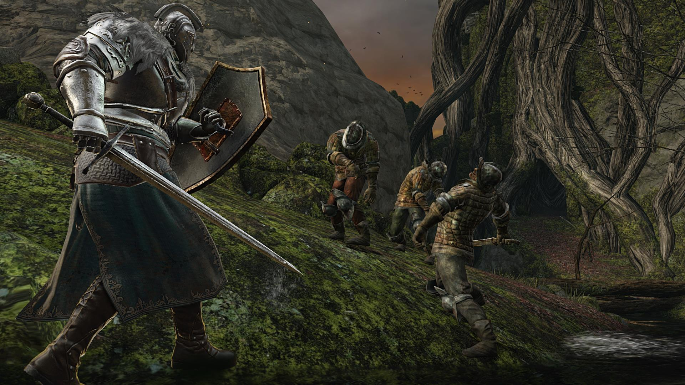

Dark Souls |
|
 |
|
Fejlesztő: |
FromSoftware |
Műfaja: |
Akció, Szerepjáték |
Kiadási dátum: |
2011.szeptember.22 |
Platformok: |
Windows, Xbox 360, Playstation 3, |
A játék meghatározó mozgatóeleme a világ felfedezése. A játék bátorítja a játékosokat, hogy figyelemmel haladjanak előre, tanuljanak a hibáikból és alternatív részeket fedezzenek fel a világból. A Dark Souls egy nagy és nyílt világban játszódik, melyet egy központi helység köt össze (Firelink Shrine). A játékosok tetszőlegesen vándorolhatnak a nagyvilágban és fedezhetnek fel alternatív utakat az új területekhez. Viszont vannak olyan helységek a világban ahova vannak követelmények a bejutáshoz.
A Dark Souls kegyetlen világában egyféle könnyítő elemként és ellenörzőpontként (checkpoint) működnek a kisebb tábortüzek, amelyek mellett a játékosok megpihenhetnek és visszanyerhetik az elvesztett életerejüket és újratölthetik gyógyital flaskáikat. A tábortűz ugyanúgy funkcionál egyféle fejlődési pontként mivel a játékosok itt elkölthetik a begyűjtött pontjaikat (lelkeket), hogy tovább fejlesszék és erősítsék a karakterüket. De mindennek ára van, és azért cserébe, hogy a játékos visszatöltse életerejét és frissen indulhasson útnak, egy ilyen tábortűz használata minden ellenséget (kivéve fő, és kisebb főellenséget) feléleszt, és ismét le kell küzdeniük őket hogy tovább juthassanak.
| OS: | Windows XP , Windows Vista, Windows 7, or newer |
| Processor: | 2.6 GHz Dual-Core |
| Ram: | 1 GB (XP), 2GB (Vista/7) |
| Tárhely: | 4 GB |
| Videókártya: | ATI Radeon 4850 or higher, NVIDIA GeForce 8800 GT |
| DirectX: | 9.0c |

|
||

|

|
|